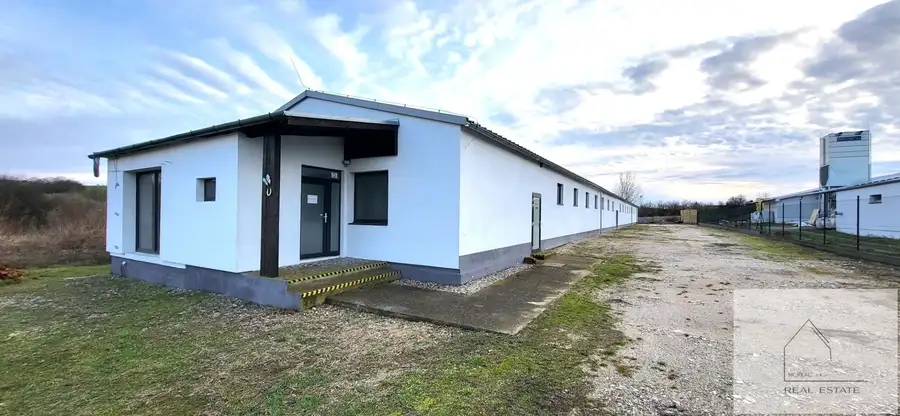
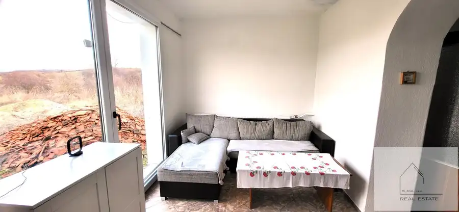
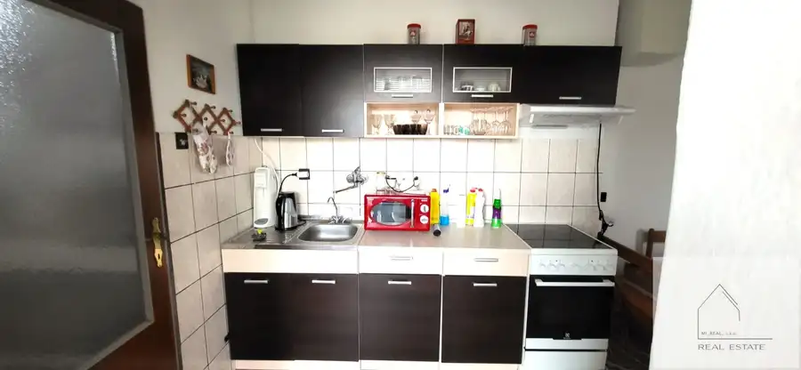
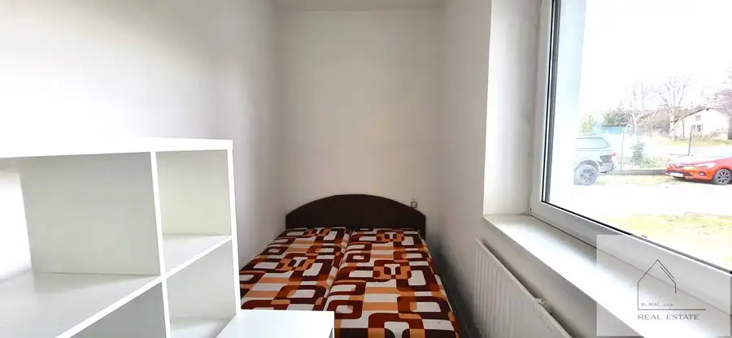
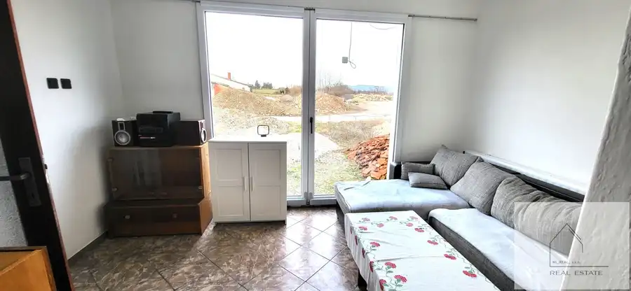
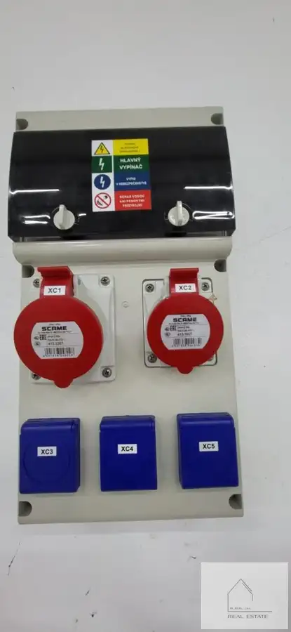

Skladovacie priestory pri Vrábľoch na prenájom
Vráble






- Plocha740 m²
- StavNovostavba
- VlastníctvoOsobné
O nehnuteľnosti
V zastúpení realitnej kancelárie MI_REAL, s.r.o. Vám ponúkame na prenájom novostavbu- nebytovú budovu v obci Nevidzany, pár minút jazdy za mestom Vráble.Priestor pozostáva z kancelárskych a skladovacích priestorov s garážovou bránou (možnosť využitia za účelom skladovania tovaru resp. využitia na výkon odborných prác - automechanik, a pod...)ID: 2024333 ARozloha: kancelárske priestory - cca 40 m2 skladovací priestor - cca 700 m2Dispozičné riešenie:- kancelárske priestory - súčasťou je malá kuchynka a 2 miestnosti - možné využiť na kancelárske účely - skladovacie priestory- súčasťou je elektrická garážová brána IS:- priestory sú pripojené na inžinierske siete: elektrika 230/380 V, studňaLokalita:- objekt sa nachádza v okrajovej časti obce Nevidzany, len pár minút jazdy autom do mesta Vráble Výhody:- perfektná lokalita, do mesta Vráble cca 5 min.- všestranná možnosť využitia- v danej lokalite momentálne prebieha príprava na zapojenie optiky - v priestore je kúrenie, kamerový systémCena: nájom 1.500 €/mesiac (bez energií)Priestor je k dispozícii od 01.10.2026 resp. podľa dohody.Zaujala Vás naša ponuka? Neváhajte nás kontaktovať, radi Vás prevedieme danou nehnuteľnosťou. Všetci ste srdečne vítaní.kontakt: Mgr. Miroslava Uhrinovát.č.: 0949 729 188e-mail: miroslava.uhrinova@mirealreality.sk
Parametre
- Druh
- Priestor pre sklad
- Dátum zverejnenia
- 09. 01. 2024
- Energetický certifikát budovy
- nie je
- Rok výstavby
- 1970
- Stav nehnuteľnosti
- Novostavba
- Typ
- Prenájom
- Typ konštrukcie
- Tehlová
- Vlastníctvo
- Osobné
- Úžitková plocha
- 740 m²